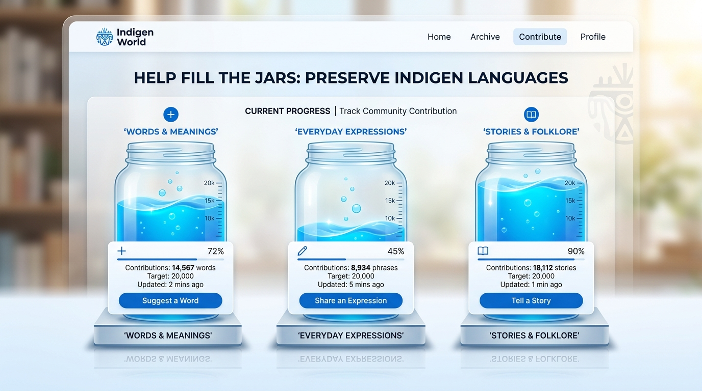
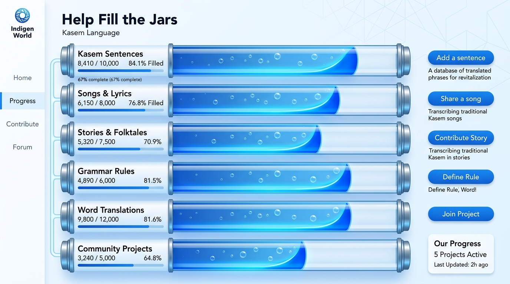
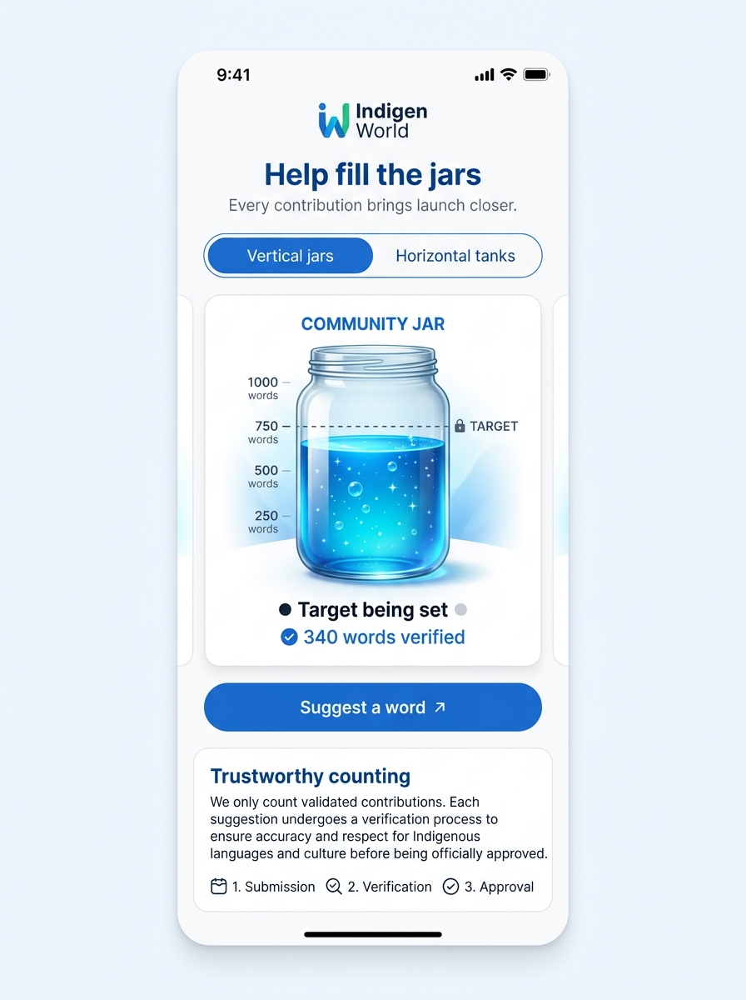

Help Fill the Jars: Track our community progress toward launch
As we work toward our planned December/January launch window, we want every community member to see clearly where we stand, celebrate what has already been preserved, and find an immediate way to help. Today, we are introducing a new animated public progress page at indigenworld.com/progress, built around a simple, visual metaphor: Help Fill the Jars.
Availability: Implemented and verified in the Indigen World web repository on 4 October 2026. The page is integrated into public navigation and the footer under “Our Progress”. Live progress counts read directly from approved Firestore records via secure server-side aggregations. Because launch targets are being finalized with language custodians, categories without a confirmed remote target honestly display “Target being set” rather than arbitrary numbers.

The vertical jars view: transparent vessels fill from bottom to top with moving liquid and rising bubbles as verified contributions are approved. Illustration: Indigen World.
Two genuinely different ways to view our progress
Visitors can switch seamlessly between two carefully composed views using an accessible segmented control at the top of the page:
Vertical jars: Upright transparent glass jars where blue liquid fills upward, bubbles rise gently through the liquid, and calibrated measurement marks indicate progress. Each jar rests on a subtle glass pedestal with its category details and contribution button directly below.
Horizontal tanks: Sleek horizontal vessels where liquid advances from left to right behind curved menisci, with bubbles drifting horizontally toward the advancing edge.
The switch preserves all counts, filters, and animation states without reloads. Your preferred view is automatically remembered locally on your device.

The horizontal tanks view: an alternative panoramic perspective with bubbles drifting horizontally toward the advancing fill edge. Illustration: Indigen World.
Ten distinct heritage categories
Language and living heritage cannot be reduced to a single generic number. We have preserved the authentic distinctions of the Indigen World ecosystem across ten dedicated categories:
Words & Meanings: Published dictionary headwords with approved senses, parts of speech, and attributions.
Everyday Expressions: Full greetings, idioms, and conversational sayings captured in real social context.
We never merge distinct categories or split multi-word expressions into individual words merely to inflate milestone statistics.
Trustworthy counting and data integrity
Every vessel reflects genuine, verified work ready for our community:
Approved contributions only: Launch progress measures verified, usable material. Pending submissions appear as compact “Awaiting review” notes and do not inflate the liquid fill until community validators approve them.
Honest target states: If a category milestone is being agreed upon with community custodians, the jar displays “Target being set” rather than publishing an unverified number. Development fixtures with sample targets can be previewed using an explicit developer control, keeping test fixtures clearly separated from production reality.
No artificial urgency: The category that genuinely needs the most help is highlighted based on remaining target percentage, without countdown timers, guilt-inducing copy, or gamified point screens.
Privacy-preserving queries: Aggregations are calculated on the server using Firebase count queries. No private contributor data, unapproved drafts, or personal notes are ever downloaded to a visitor’s browser.

Responsive mobile view at 390px: vessels reflow into an intuitive single column without horizontal scrolling, highlighting honest targets and clear action buttons. Illustration: Indigen World.
Respectful motion and battery-friendly performance
Motion brings the page to life, but remains respectful of your device and preferences:
A prominent Pause motion button lets you stop all continuous liquid and bubble animations at any time.
Animations automatically pause whenever the browser tab is hidden or when vessels scroll outside the viewport.
Visitors with prefers-reduced-motion enabled in their operating system receive a clean, static presentation with no continuous animations.
All decorative bubbles and SVG movement effects are hidden from screen readers via aria-hidden="true", while assistive technology receives standard progressbar announcements.
How you can help fill the jars
Underneath every vessel is an invitation with a category-specific action—whether to Suggest a word, Share an expression, Add a sentence, or Record audio. Clicking any button takes you directly to the relevant workflow in TribeStudio with the category pre-selected. Signed-out visitors are guided through quick sign-in and returned directly to their chosen contribution flow.